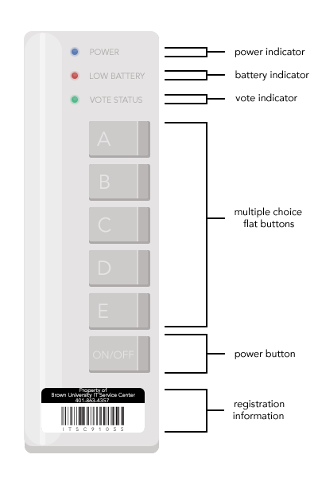
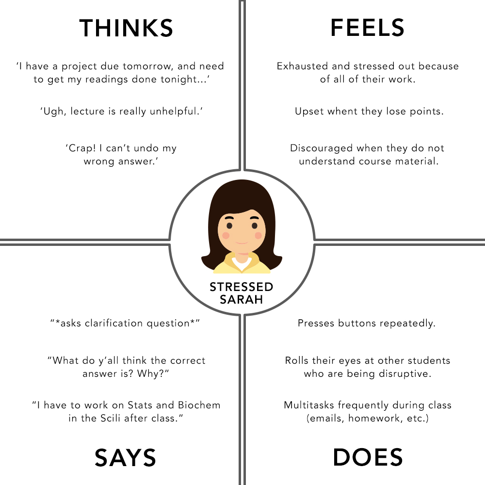
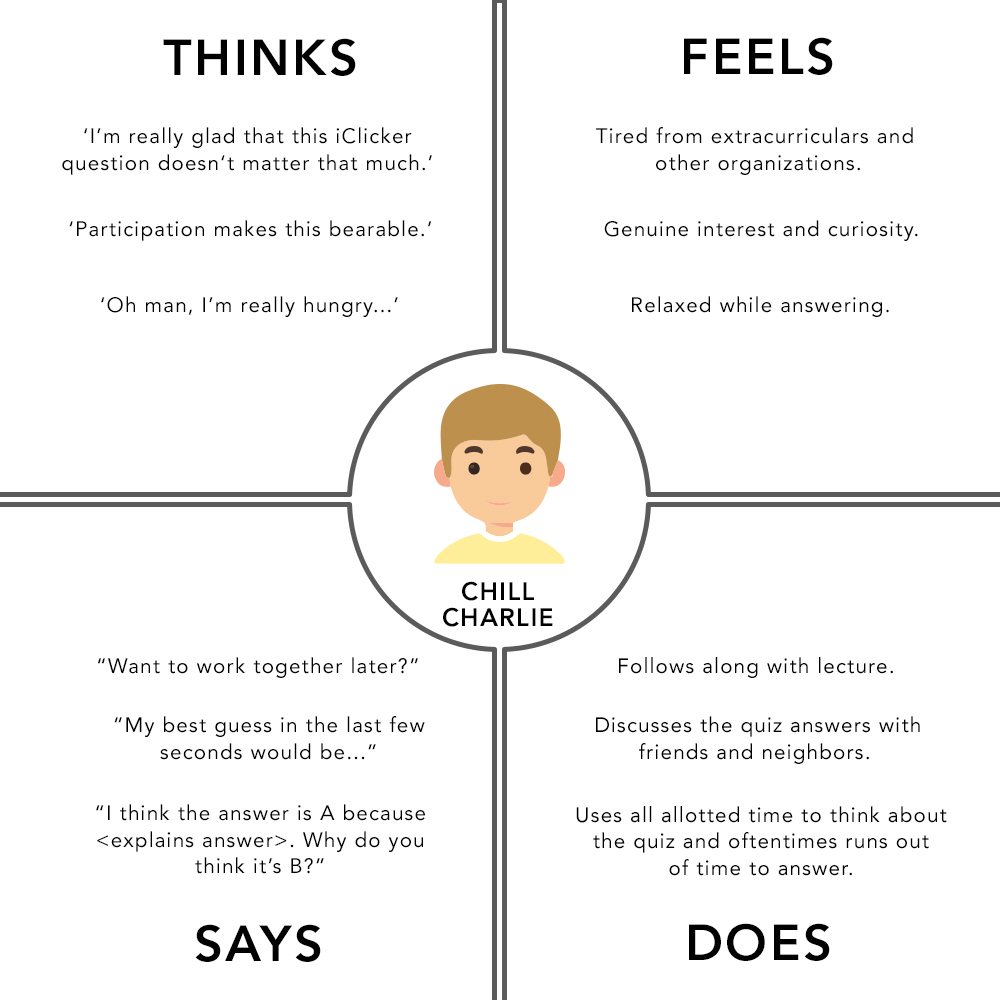
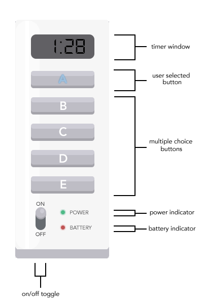

Nothing at Brown University is more ubiquitous than the universal dread of using an iClicker in a course. The announcement of an iClicker quiz is often met with a chorus of irritated groans, to the point where its mere existence has become somewhat of an inside joke to students. However, this frustration does not necessarily come from the graded participation itself, but instead from the interface and user interactions.

What is an iClicker? It's a small remote that many courses at Brown use to facilitate participation and understanding in large lecture classes, normally used to poll the class for answers to multiple-choice quizzes.
The remote's interface consists mostly of buttons; it has an on/off toggle button as well as five buttons that correspond with the letters “A”, “B”, “C”, “D”, and “E.” The top of the remote contains three indicators: a power indicator which lights up blue when the iClicker is on, a low battery indicator that flashes red, and a vote status indicator that flashes green once if the vote is received and flashes red otherwise.
Though the design of the iClicker is simple and ergonomic, there is huge design flaw: while the iClicker is incredibly usable in regards to prompting users for input, it completely fails in regards to giving users feedback. It is an interface that prompts many questions: Where do the exact shortcomings of this design lie? How can these flaws be ameliorated? And how should designers go about determining what their users want and implementing these wants and needs?
To further explore this problem and come up with a potential solution, I first used methods such as behavioral observation during lectures where students used the iClicker, and followed this up with user interviews to get a better sense of specific design problems. Next, I analyzed the information I collected by forming mental models, or explanations that users develop about how certain interfaces work. I then derived personas, or a specific type of realistic user, to further understand the relationships and interaction between iClickers and their users. Lastly, I used all of the information and reasoning I had gathered to guide me in redesigning the iClicker and implementing interface changes.
To begin my process, I decided to observe a number of users during a CS0330 lecture. CS0330 is one of the largest intermediate-level computer science courses and has three, hour-long lectures per week. CS0330 also uses iClicker questions during lectures, and these participation quizzes count as part of a final student's grade.
Typically, an instructor will pose a question on their lecture slides, with answer options that correspond with the letters on the iClicker. Students have a certain amount of time to select what they believe to be the correct answer, and press the correct button on their iClicker in order to have it recorded. If no selection is made, an answer will not be recorded for that student, but students can change their answers by selecting a different button before the time ends. The professor for CS0330 followed this standard iClicker implementation.
I scanned for user behavior and attitudes throughout the entire class, and came up with a list of key observations.
- Users kept their personal iClickers in their bags or backpacks, and pulled them out during the first iClicker quiz.
- After the first quiz, users tended to keep their iClickers easily accessible and outside of their bags.
- When not in use, users placed their iClickers on their laps, on lecture hall chair desks, or on their laptop keyboards.
- Some users click the answer just once, but most users click an answer multiple times or continuously until the quiz is over.
- Some users leave their iClicker on throughout the entire class, but others turn off and on after each quiz.
- Users also had to enter the frequency for the course every time they turned their iClicker off and on.
- Users did not know when exactly the iClicker session started or ended.
- Users did not know whether they could change their answers once submitted.
- Some users could not remember whether or not they had entered an answer.
To complement my generalized observations, I also followed up with two users and interviewed them to further learn about their attitudes, interactions, and behaviors. In order to reduce bias, I asked these questions in a casual environment directly following the CS0330 lecture, and tried to avoid leading questions.
Why do you use the iClicker in CSC0330?
User 1: I use it to get participation points for 33.
User 2: The class uses it to check attendance.
Which of your classes at Brown so far have required iClickers or other participation technology?
User 1: CS15 is the only other class.
User 2: CS18, and a social science course.
How do iClickers impact your attention to and understanding of the material?
User 1: I think to a certain extent it helps me pay attention, but only because we go over the problem step by step afterwards.
User 2: I don't think they really impact much. It's up to the student whether or not to pay attention; the iClicker won't do that for them, because you can still use it to answer quizzes without really learning the material.
How do you feel about the iClicker interface design?
User 1: I do think it's pretty ergonomic and fits really nicely into my hand. I can grip it well. One thing I hate is that you can never tell which answer you sent in, because the buttons don't stay lit and there's no way to find out.
User 2: I think it's pretty simple and nice. The buttons are definitely big and accessible.
If you could redesign the iClicker with other abilities or features, what would they be?
User 1: Better response or light indicators.
User 2: Maybe a switch for turning the iClicker on and off, instead of a giant button. And maybe a timer of some sort.
What do you think are the iClicker’s most important features?
User 1: The buttons.
User 2: The answer choices and the indicator light.
Do you like the aesthetic design of the iClicker?
User 1: Not at all. It's clunky and kind of ugly.
User 2: I think it could be better. The aesthetics aren't super pleasing to the eye, but it works.
Have you used any other type of in-class participation technology? How does it compare to the iClicker?
User 1: I used paper-based participation in one class, where we would write the answer choice on a piece of paper. That was much worse, I don't think the professor even collected them so no one cared.
User 2: I used REEF polling on mobile and desktop. It was much better, and I didn't have to carry around the iClicker.
Both the behavioral observation session and the user interviews were helpful in understanding both flaws and great aspects of the iClicker interface. The design definitely employs some usability principles, like having a certain amount of light indicator-mediated repsonsiveness or the size of the buttons being both accessible and preventing errors like fingerslips. However, by far the biggest problems observed is the amount ambiguity regarding if an answer was successfully pressed and reccorded, the lack of acknowledgement about whether an answer is changed, and how much time is left in the iClicker session.
Next, I constructed two mental models, or how a user belives an interface works. The user’s beliefs, assumptions, and behaviors informed these models, and these models in turn affect user behavior. The disparity between these, the implementation of the interface, and the way it is supposed to be used can further emphasize what needs to be changed or altered.
Model 1
A user assumes that because their vote status button does not stay lit after selecting an answer option, their answer was not recorded. This causes the user to want to ensure their correct answer has been recorded correctly; therefore to alleviate anxiety they continuously press the button. The user believes that a button should have a lasting effect on the indicator, so when this does not occur, they become stressed.
Model 2
A user sometimes runs out of time to answer the iClicker question. Their goal is to understand the material fully and learn from the iClicker quizzes instead of stressing about a correct answer, and they sometimes gets sidetracked during discussions with classmates. Because they expect an indicator to let them know how much time they have left when in actuality this feature is absent, they are unable to correct or log their answer before the time runs out.
After solidifying these mental models, I used them to create personas of iClicker users.

Stressed Sarah is a persona that represents a set of consistent characteristics that were shown through several observed and interviewed users. She is your typical stressed-out sophomore who is majoring in Computer Science, and cares a lot about her grades(even over understanding course material). She's a bit anxious and is mostly busy just trying to stay on top of all of her work. Sarah is mostly concerned with getting correct answers to iClicker quizzes so she may obtain full participation credit. This manifests itself in behaviors like clicking her answer choice on the iClicker multiple times to ensure her answer is logged and the indicators flash, asking other students what they believe the correct answer is, and reflexively keeping the iClicker close by and on.

Chill Charlie is a persona created to closely align with the traits of a CS33 student who cares less about the participation grade and more about getting a good understanding the material during iClicker quizzes. Charlie is a college junior majoring in Computer Science and Visual Arts, and he loves print design. Charlie frequently runs out of time while discussing the question, and makes several answer changes depending on the course of the conversation and progression of his understanding. He cares more about understanding material and doesn't worry about missing a few participation points here or there. Charlie was made to be a sort of antithesis to Stressed Sarah; a reminder that iClicker users are a spectrum and can often have extreme opinions about the interface involved.

The very first user interface pain point that I addressed was the ambiguous or otherwise nonexistent feedback that the current iClicker indicators gave. There were two major problems with the indicators for voting: 1) the vote indicator only flashed once when an answer was selected, leading some users to forget if their answer was recorded, and 2) the vote indicator was the same one for each button. To address this issue, I changed the interface so that each button's letter label acted as its own indicator (that is, when a user presses the button marked "A", the letter will light up and stay lit until the end of the voting round). This redesign should alleviate the multiple button-presses a user feels as though they have to make to have their answer correctly recorded, because it confirms which button has been pressed and that a button has been pressed. Additionally, it gives users much more feedback than the original iClicker design.
Another change I made was switching the on and off functionality from a hold and press button to a labelled toggle switch instead. The vast majority of users of iClickers are students, and oftentimes students carry arround their iClickers in their backpacks or other bags. The previous on/off button design was prone to error, as iClickers sometimes erroneously turned on when not intended due to being pressed by other items in users' bags. By changing this interaction to a toggle switch, this redesign prevents user errors and also saves on battery power, without changing the control to be hard to use or particularly labor-intensive to use. Additionally, this toggle switch design has more visual affordance and feedback given than the press and hold button.
One of the biggest complaints garnered from both user interviews and behavioral observation were that users could not tell when vote sessions started or stopped from their clickers alone. A simple solution was to add a timer that would count down near the very top, so that as users discussed answers they would always be able to see exactly how much time remained.
The users I interviewed and observed seemed to prioritize the time of the iClicker question and the ability to select answers over turning the iClicker on and off (given that many users simply kept the iClicker on all throughout class), and given that most people process information in a top-down format, I switched the layout of the iClicker to coincide with this.
One of the most successful interface components of the original iClicker are the button shapes -- they're large, easily pressable, and hard to miss (in other words, the handle errors in a sufficient manner). However, the buttons take up only the right half of the iClicker, and this design only seems convenient if a user is gripping the device in their right hand. The original design isn't necessarily inconvenient for left-handed users to use, but it is comparatively inconvenient. I decided to remedy this by stretching the buttons to be most of the full width of the redesigned iClicker, and cut down slightly on the height of the buttons so as to save space and allow for easier thumb movement.
The most significant thing I learned from undertaking this redesign is how powerful different methods such as user interviews and behavioral observations are to gaining insights about users of a specific interface. From the one-time observation session and the two interview I conducted, I was able to find and address multiple pain points or other significant flaws in the iClicker interface, and use the information I had collected to come up with a redesign that addressed them. I was also able to more easily justify my design choices by referring back to the quantitative and qualitative data I had gathered.
Note: as of Fall 2018, the iClickers that Brown University uses have been redesigned. The
new interface is similar in some aspects to my proposed redesign. However, I do commend iClicker on making their interface much more accessible to users with the addition of braille letters next to the printed labels, and I will ensure to consider other accessibility measures in future redesigns!
{kind=link}